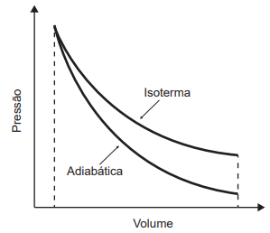
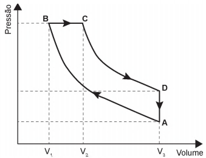
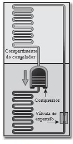

Exercícios
ENEM(2021) 1- Tanto a conservação de materiais biológicos como o resfriamento de certos fotodetectores exigem baixas temperaturas que não são facilmente atingidas por refrigeradores. Uma prática comum para atingi-las é o uso de nitrogênio líquido, obtido pela expansão adiabática do gás N2, contido em um recipiente acoplado a um êmbolo, que resulta no resfriamento em temperaturas que chegam até seu ponto de liquefação em −196 °C. A figura exibe o esboço de curvas de pressão em função do volume ocupado por uma quantidade de gás para os processos isotérmico e adiabático. As diferenças entre esses processos podem ser identificadas com base na primeira lei da termodinâmica, que associa a variação de energia interna à diferença entre o calor trocado com o meio exterior e o trabalho realizado no processo.
(A) a entrada de calor que ocorre na expansão por causa do trabalho contribui para a diminuição da temperatura.
(B) a saída de calor que ocorre na expansão por causa do trabalho contribui para a diminuição da temperatura.
(C) a variação da energia interna é nula e o trabalho é associado diretamente ao fluxo de calor, que diminui a temperatura do sistema.
(D) a variação da energia interna é nula e o trabalho é associado diretamente à entrada de frio, que diminui a temperatura do sistema.
(E) o trabalho é associado diretamente à variação de energia interna e não há troca de calor entre o gás e o ambiente.
Mostrar resposta
Alternativa correta: Letra E
ENEM(2021) 2- Em um manual de instruções de uma geladeira, constam as seguintes recomendações:
. Mantenha a porta de seu refrigerador aberta apenas o tempo necessário;
. É importante não obstruir a circulação do ar com a má distribuição dos alimentos nas prateleiras;
. Deixe um espaço de, no mínimo, 5 cm entre a parte traseira do produto (dissipador serpentinado) e a parede.
Com base nos princípios da termodinâmica, as justificativas para essas recomendações são, respectivamente:
(A) Reduzir a saída de frio do refrigerador para o ambiente, garantir a transmissão do frio entre os alimentos na prateleira e permitir a troca de calor entre o dissipador de calor e o ambiente.
(B) Reduzir a saída de frio do refrigerador para o ambiente, garantir a convecção do ar interno, garantir o isolamento térmico entre a parte interna e a externa.
(C) Reduzir o fluxo de calor do ambiente para a parte interna do refrigerador, garantir a convecção do ar interno e permitir a troca de calor entre o dissipador e o ambiente.
(D) Reduzir o fluxo de calor do ambiente para a parte interna do refrigerador, garantir a transmissão do frio entre os alimentos na prateleira e permitir a troca de calor entre o dissipador e o ambiente.
(E) Reduzir o fluxo de calor do ambiente para a parte interna do refrigerador, garantir a convecção do ar interno e garantir o isolamento térmico entre as partes interna e externa.
Mostrar resposta
Alternativa correta: Letra C
ENEM(2017) 3- Rudolf Diesel patenteou um motor a combustão interna de elevada eficiência, cujo ciclo está esquematizado no diagrama pressão x volume. O ciclo Diesel é composto por quatro etapas, duas das quais são transformações adiabáticas. O motor de Diesel é caracterizado pela compressão de ar apenas, com a injeção do combustível no final.
(A) A → B e C → D, pois em ambos ocorre realização de trabalho.
(B) A → B e B → C , pois em ambos ocorre elevação da temperatura.
(C) C → D, pois representa uma expansão adiabática e o sistema realiza trabalho.
(D) A → B, pois representa uma compressão adiabática em que ocorre elevação da temperatura.
(E) B → C , pois representa expansão isobárica em que o sistema realiza trabalho e a temperatura se eleva.
Mostrar resposta
Alternativa correta: Letra E
ENEM(2016) 4- Até 1824 acreditava-se que as máquinas térmicas, cujos exemplos são as máquinas a vapor e os atuais motores a combustão, poderiam ter um funcionamento ideal. Sadi Carnot demonstrou a impossibilidade de uma máquina térmica, funcionando em ciclos entre duas fontes térmicas (uma quente e outra fria), obter 100% de rendimento.
Tal limitação ocorre porque essas máquinas:
(A) realizam trabalho mecânico.
(B) produzem aumento da entropia.
(C) utilizam transformações adiabáticas.
(D) contrariam a lei da conservação de energia.
(E) funcionam com temperatura igual à da fonte quente.
Mostrar resposta
Alternativa correta: Letra B
ENEM(2009) 5- A invenção da geladeira proporcionou uma revolução no aproveitamento dos alimentos, ao permitir que fossem armazenados e transportados por longos períodos.
A figura apresentada ilustra o processo cíclico de funcionamento de uma geladeira, em que um gás no interior de uma tubulação é forçado a circular entre o congelador e a parte externa da geladeira. É por meio dos processos de compressão, que ocorre na parte externa, e de expansão, que ocorre na parte interna, que o gás proporciona a troca de calor entre o interior e o exterior da geladeira.
Nos processos de transformação de energia envolvidos no funcionamento da geladeira...
(A) a expansão do gás é um processo que cede a energia necessária ao resfriamento da parte interna da geladeira.
(B) o calor flui de forma não-espontânea da parte mais fria, no interior, para a mais quente, no exterior da geladeira.
(C) a quantidade de calor cedida ao meio externo é igual ao calor retirado da geladeira.
(D) a eficiência é tanto maior quanto menos isolado termicamente do ambiente externo for o seu compartimento interno.
(E) a energia retirada do interior pode ser devolvida à geladeira abrindo-se a sua porta, o que reduz seu consumo de energia.
Mostrar resposta
Alternativa correta: Letra B
ENEM(2017) 6- As especificações de um chuveiro elétrico são: potência de 4000 W, consumo máximo mensal de 21,6 kWh e vazão máxima de 3L/min. Em um mês, durante os banhos, esse chuveiro foi usado com vazão máxima, consumindo o valor máximo de energia especificado. O calor específico da água é de 4200 J/(kg ºC) e sua densidade é igual a 1kg/L.
A variação da temperatura da água usada neses banhos foi mais próxima de:
(A) 16°C
(B) 19°C
(C) 37°C
(D) 57°C
(E) 60°C
Mostrar resposta
Alternativa correta: Letra B
Explicação
Energia utilizada no mês:
216kWh = 216 . 103 . 3600 = 77,76 . 106J
Tempo que o chuveiro ficou ligado:
P = E/∆tempo
4000 = 77,76 . 106/∆t
∆t = 19440 s = 324 min
Volume de água utilizado:
Vágua = 3. 324
Vágua = 972 L
Como a densidade da água é igual a 1, usando a fórmula da densidade temos o valor da massa igual a 972 kg
Com isso:
Q = m . c . ∆Temperatura
77,76 . 106 = 972 . 4200 . ∆T
∆T = 19°C
ENEM(2011) 7- Um motor só poderá realizar trabalho se receber uma quantidade de energia de outro sistema. No caso, a energia armazenada no combustível é, em parte, liberada durante a combustão para que o aparelho possa funcionar. Quando o motor funciona, parte da energia convertida ou transformada na combustão não pode ser ultilizada para a realização de trabalho. Isso significa dizer que há vazamento da energia em outra forma.
De acordo com o texto, as transformações de energia que ocorrem durante o funcionamento do motor são decorrrente da:
(A) Liberação de calor dentro do motor ser impossível.
(B) Realização de trabalho pelo motor ser incontrolável.
(C) Conversão integral de calor em trabalho ser impossível.
(D) Transformação de energia térmica em cinética ser impossível.
(E) Utilização de energia potencial do combustível ser incontrolável.
Mostrar resposta
Alternativa correta: Letra C
ENEM(2009) 8- A luz solar que atinge a parte superior da atmosfera terrestre chega a uma taxa constante de 135,2 mW/cm². Dessa radiação, apenas 50% conseguem chegar à superfície, pois parte dela é refletida pelas nuvens e absorvida pela atmosfera. A radiação solar pode ser aproveitada para aquecer água de reservatórios, entre outras aplicações. Um sistema básico para transformar energia solar em térmica é ilustrado na figura ao lado acima. Esse sistema é constituído de coletores solares e de um reservatório térmico, chamado boiler. Os coletores solares, geralmente, são feitos de materiais que absorvem bem a radiação solar, e o calor gerado nos coletores é transferido para a água que circula no interior de suas tubulações de cobre. A água aquecida é armazenada no boiler. Dessa forma, a água é mantida quente para consumo posterior. A caixa de água fria alimenta o boiler, mantendo-o sempre cheio.
É correto afirmar que os coletoes solares permitem boa economia de energia, pois...
(A) Se aplicam à produção tanto de energia térmica quanto elétrica.
(B) Constituem fonte energética alternativa aos combustíveis fósseis usados no transporte.
(C) Convertem energia radiante em energia térmica, que é usada no processo de aquecimento da água.
(D) Permitem economizar até 135,2 mKw de energia elétrica, que seriam gastos com aquecimento elétrico.
(E) A energia luminosa ocletada por eles pode ser usada para reduzir o número de lâmpadas usadas no ambiente.
Mostrar resposta
Alternativa correta: Letra C
ENEM(2009) 9- É possível, com 1 litro de gasolina, usando todo o calor produzido por sua combustão direta, aquecer 200 litros de água de 20°C a 55°C. Pode-se efetuar esse mesmo aquecimento por um gerador de eletricidade, que consome 1 litro de gasolina por hora e fornece 110 V a um resistor de 11Ω, imerso na água, durante um certo intervalo de tempo. Todo o calor liberado pelo resistor é transferido à água. Considerando que o calor específico da água é igual a 4,19J.g-1.°C-1, aproximadamente qual a quantidade de gasolina consumida para o aquecimento de água obtido pelo gerador, quando comparado ao obtido a partir da combustão?
(A) A quantidade de gasolina consumida é igual para os dois casos.
(B) A quantidade de gasolina consumida pelo gerador é duas vezes maior que a consumida na combustão.
(C) A quantidade de gasolina consumida pelo gerador é duas vezes menor que a consumida na combustão.
(D) A quantidade de gasolina consumida pelo gerador é sete vezes maior que a consumida na combustão.
(E) A quantidade de gasolina consumida pelo gerador é sete vezes menor que a consumida na combustão.
Mostrar resposta
Alternativa correta: Letra D
Explicação
Calculado a quantidade calor:
Q=m.c.ΔT
Q = 200 . 4,19 . 103 . 35
Q = 29330.103J
Calculando a potência elétrica:
P=U²/R
P=110²/11
P=1100 W
A equação da potência relaciona as duas grandezas que encontramos, podemos utilizá-la para calcular o intervalor de tempo.
P=Q/Δt
1100 = 29330.10³/Δt
Δt = 26663s
Δt = 7,4h
Já que o gerador consome 1 L de gasolina por hora. Podemos dizer que o consumo será na ordem de 7 L.
ENEM(2020) 10- As panelas de pressão reduzem o tempo de cozimento dos alimentos por elevar a temperatura de ebulição da água. Os usuários conhecedores do utensílio normalmente abaixam a intensidade do fogo em panelas de pressão após estas iniciarem a saída dos vapores. Ao abaixar o fogo, reduz-se a chama, pois assim evita-se o(a):
(A) aumento da pressão interna e os riscos de explosão.
(B) dilatação da panela e a desconexão com sua tampa.
(C) perda da qualidade nutritiva do alimento.
(D) deformação da borracha de vedação.
(E) consumo de gás desnecessário.
Mostrar resposta
Alternativa correta: Letra E